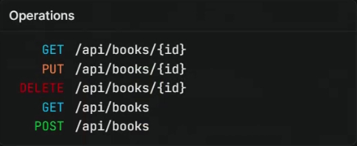
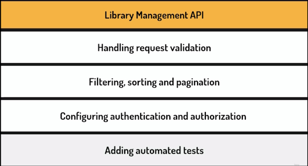
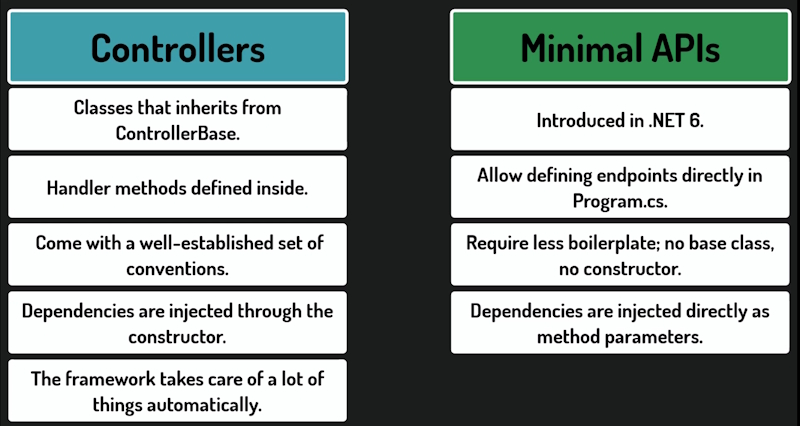
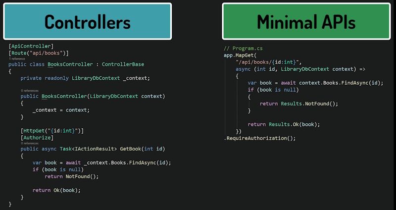
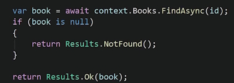
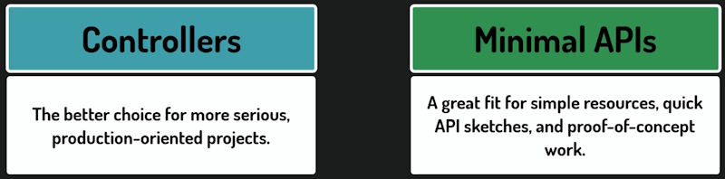
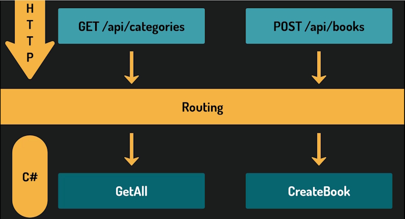
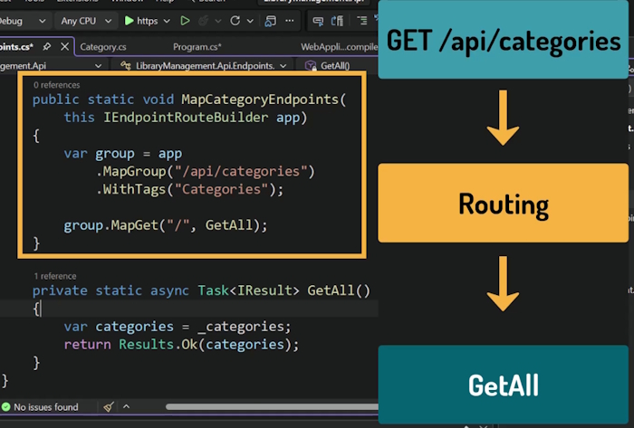

We are building a Book library API.
We Will build a set of API endpoints that are specific URLs which accept Requests and return Responses for our particular action.
These are the Book entity endpoints.

We will have sets of endpoints for Books, Authors, Loans and more. The data will be stored in a PostGresSQL database.
On an online system this would be done through a set of web pages but in our case we will be entering data sending the requests ourselves. We will use Scalar, an online documentation system to enter the data.
Building API endpoints is the heart of building an API but we will be doing more than that.

Minimal APIs are usually used for smaller projects. Creating a number of endpoints in Minimal APIs can get messy very quickly. We end up creating a number of classes for different endpoints to reduce this clutter.

The endpoints in the example below do exactly the same task. They return a Book based on a Book Id. One is a Controller and the other is a Minimal API endpoint.

Note: that the code to get a Book based on its Id is essentially the same for the Controller and Minimal API endpoints.

When you use Controllers over Minimal APIs depends on a number of conditions.

We will start with the simple approach of Minimal APIs.
Create an Entities directory.
Crate a class named Category.
public class Category
{
public int Id { get; set; }
public string Name { get; set; }
}
*Note: we get a warning on the Name property. The Name property is a reference type of string. We could make it a nullable type:
public string? Name { get; set; }
There is nothing to stop a user from creating a Category type with only an Id value. This would be redundant because a Category would have to have a name.
We can fix this by adding the required keyword to the property.
public required string Name { get; set; }
Now the compiler will not allow the user to create a Category without a Name value.
Why don't we use required for the Id value as well? We don't need to because once we start using a database Entity Framework will automatically generate an Id for us.
The Category class is relatively simple and we could create a Record to hold the Category information for us but we need to create a class for Entity Framework needs to be able to create a parameter-less constructor to be usable.
With this Entity defined we can now write our first endpoint.
Remove the sample endpoint from Program.cs.
Now create an Endpoints directory. In it we create a CategoriesEndpoints class for our endpoints.
Also make this class static. Why? because we never need to make an instance of this class. It is just a container for methods. A static class doesn't use a constructor and we don't need one. All dependencies will be injected into our methods.
Static classes shouldn't hold any state of its own and this prevents accidents from happening.
This class will never be a dependency for another class so we don't need to implement an Interface. Also because nothing depends on this class we will never have to mock the class in tests.
private static async Task<IResult> GetAll()
{
var categories = // Get categories from storage.
return Results.Ok(categories);
}
The method is private because it doesn't need to be accessed from outside this class. We will see soon how it gets exposed to the API.
It is static because the class itself is static and can only contain static members.
async is used because endpoints often use asynchronous operations when reading from the database and we don't want to block the thread while we are waiting.
The return type is Task of IResult. IResult is an interface that represents the HTTP response that we want to send back. To build our response we need to use the static Results class which provides methods like Results.Ok(). That method returns a result implementing IResult and sets the HTTP code to 200 meaning that the response was successful.
We will use a List to store our data.
public static class CategoriesEndpoints
{
private static List<Category> _categories =
[
new Category { Id = 1, Name = "Biography" },
new Category { Id = 2, Name = "Novel" }
];
private static async Task<IResult> GetAll()
{
var categories = _categories;
return Results.Ok(categories);
}
}
Note that Visual Studio has greyed out the GetAll() method because it is not being used.
To be able to use this class we need to register it explicitly. Once we do it becomes a handler method for handling a specific HTTP request. Every endpoint that we create will follow the same process from now on. One method for one endpoint.
Open the Endpoints Explorer in Visual Studio.
View --> Other Windows --> Endpoints Explorer
This is only used in Visual Studio and is only used for this example. In future we will use Scalar which is better.
It shows all endpoints currently registered in our application.
Our getAll() method is just a regular C# method at this point. ASP.NET Core has no idea it exists. Let's fix it.
To register our endpoint, we will add a dedicated public method to our CategoriesEndpoints class.
public static void MapCategoriesEndpoints(this IEndpointRouteBuilder app)
{
var group = app
.MapGroup("/api/categories")
.WithTags("Categories");
group.MapGet("/", GetAll);
}
The MapCategoriesEndpoints() method is public and static.
Public, because it will be called from Program.csand static, because the class is static.
It is an extension method on IEndpointRouteBuilder. we use the this keyword in front of the parameter.
In short, extension methods let us add methods to a type, even if this type is defined outside our codebase.
Or like in this case, when a type cannot have full-bodied methods defined, like the interface we are using here.
With this method defined like this, we will be able to call it on any object implementing this interface, just like it was defined in this object's type.
Before we explain what exactly this IEndpointRootBuilder is, we need to understand routing.
Routing is the mechanism that maps an incoming HTTP request, so the method and URL, to the specific code that should handle it.
In our case, the GET request with this URL should be redirected to this getAll() method.

In our case a request like GET /api/Categories should be routed to the C# GetAll() handler. Routing is a key part of work on an API. It is the framework on what request gets routed to what method.
We must tell the framework which requests get redirected to which methods.
And this is exactly what we can use the IEndpointRootBuilder for.
It is an interface from ASP.NET Core that represents the part of the application responsible for routing.
In other words, an object that decides which method gets called when a request comes in. As it turns out, we already have an object implementing this interface.
In Program.cs, we have an object called App, which is of type WebApplication.
If we look at its implementation we see that it implements IEndpointRouteBuilder which is the object we will use when calling the extension method we defined.
group.MapGet("/", GetAll);
And here is where we actually configure the routing with a call to the MapGet() method.
This method registers our getAll() method as the handler for GET requests.
We could call this method in our Program.cs but it would get messy fast. It is better to call an extension method.
This is the standard pattern for organizing minimal API endpoints.
It keeps Program.cs clean, while still giving us full access to the routing system.
Let's understand this method.
MapGroup creates a root group.
Every endpoint we register inside this group will automatically have api/categories as the beginning of its URL.
Right now, we only have one endpoint, so the benefit is not obvious yet. But we will soon add more, and all of them will share the same prefix, without us having to repeat it every time.
The withTags() method adds a tag to the group. Tags are used by documentation tools. We will see this clearly once we set up Scalar. They control how endpoints are grouped and displayed in the API documentation.
In our case, all endpoints related to categories will appear together under the Categories label.
Now the MapGet() method.
The first argument is the root for this specific endpoint.
A single forward slash means we are not adding anything on top of what the group already defines.
And that makes sense here, because this endpoint returns all categories, and does not need any additional information in the URL, like for example the Id.
The full URL will simply be api/categories.
Later, when we add an endpoint that fetches a single category by Id, the root will look different something like /id but for now, a slash is all we need.
The second argument is the method to call when the request comes in.
So in short, this configures routing in this way. When a GET request comes in with an URL equal to api/categories, the GetAll method will be called.

Now we need to call the MapCategoryEndpoints method from Program.cs.
First, we need to add a using directive at the top of the Program.cs file.
using LibraryManagement.Api.Endpoints;
And then, before app.run() we should call our method.
...
app.UseAuthorization();
app.MapCategoriesEndpoints();
app.Run();
This is the line that actually connects everything together. Without it, the registration method we just wrote would never be called. Let's rebuild the project and check the Endpoints Explorer again. Our endpoint is now visible.
The framework knows it exists and how to route requests to it.
Very soon, we will run the application and send the first request to this endpoint.